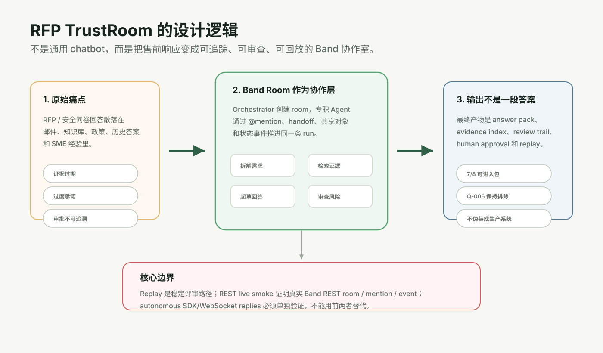
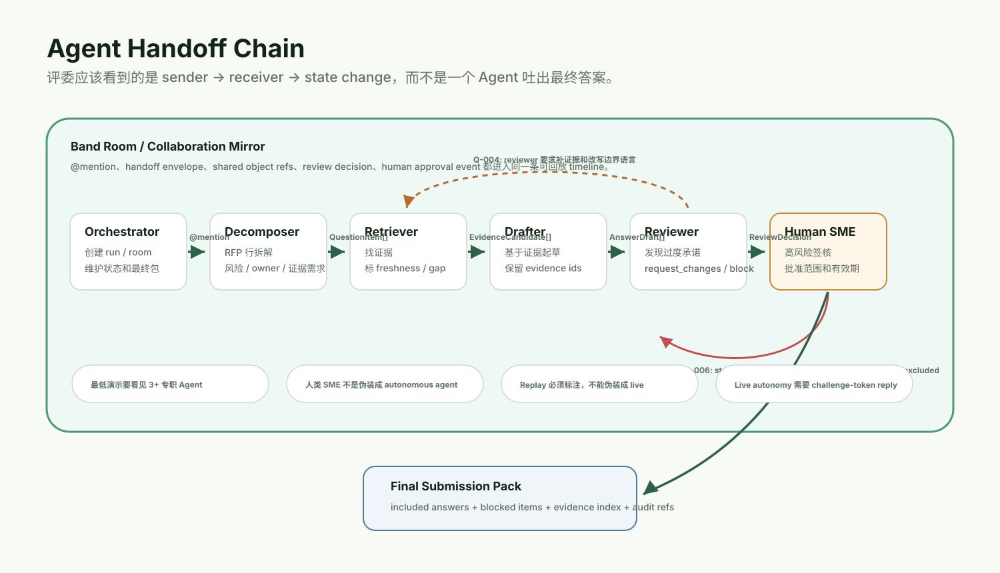
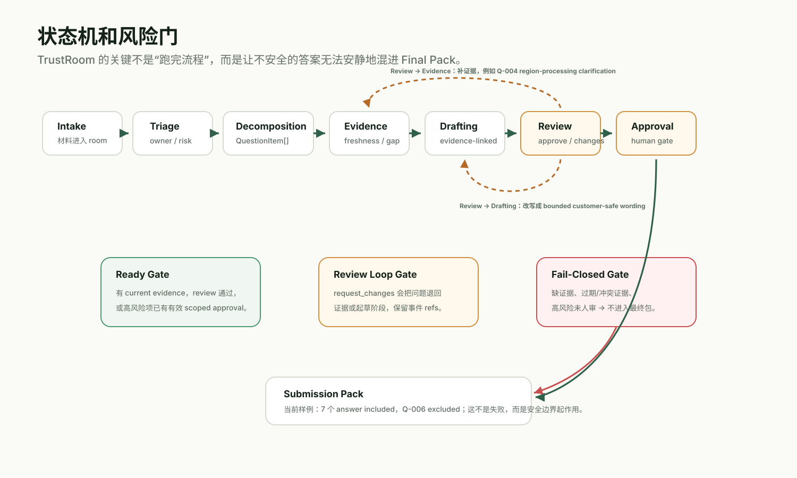
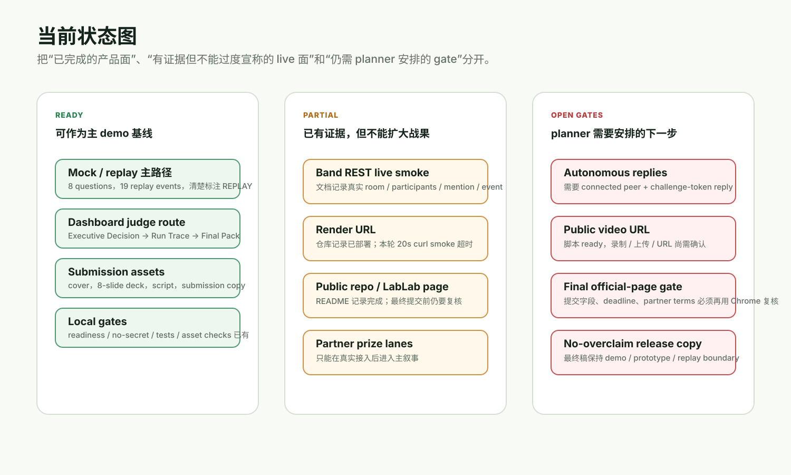
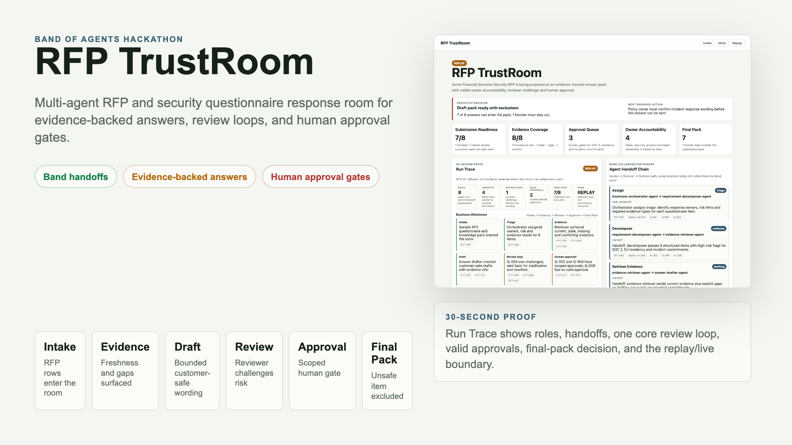
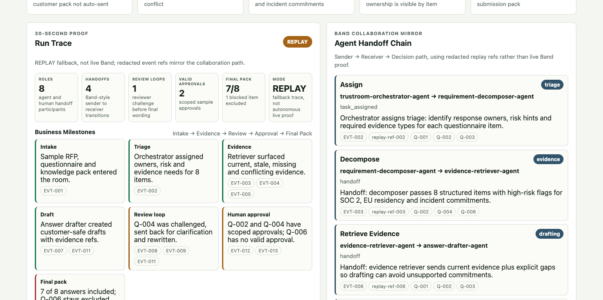
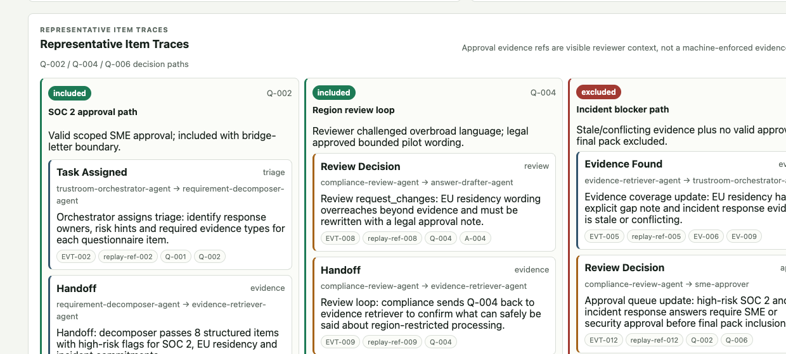

RFP TrustRoom design brief · 2026-06-15
从业务痛点到可回放多 Agent 协作室
这份文档给 planner 的入口不是“再做一个 RFP 自动填表工具”，而是解释为什么 RFP TrustRoom 必须把 Band 协作、证据同源、审查反驳、人审和 replay/live 边界放在同一条产品逻辑里。

一句话定位
RFP TrustRoom 是一个面向 B2B 售前团队的 RFP / 安全问卷 / 证据同源协作室。客户材料进入同一个 Band room 后，专职 Agent 通过 @mention 和 handoff 拆解需求、检索证据、起草回答、审查风险，并把高风险承诺交给 human SME 做 scoped approval，最后输出 answer pack、evidence index 和 replayable audit timeline。
推荐 planner 固定这条叙事：Band 是协作层，不是最后通知渠道；TrustRoom 是风险受控的提交包生成流程，不是通用聊天机器人。
为什么这样设计
问题不是写作
RFP / security questionnaire 的核心风险在于证据是否新、承诺是否过界、审批是否可追溯。只做 answer drafting 会把最危险的部分藏起来。
Band 必须在主链路
比赛核心是多 Agent 协作。TrustRoom 用 Band room 承载 agent identity、@mention routing、handoff、shared context 和 event timeline。
Replay 是产品资产
replay 不是造假 fallback，而是让评委和团队在 live API 不稳时仍能检查同一条业务链路。它必须标注为 REPLAY。
最终包要 fail closed
缺证据、过期/冲突证据、unsupported certification、高风险未人审都不应自动进入客户包。Q-006 被排除是价值证明，不是 demo 缺陷。
核心对象
一次协作流程，带 mode、state、Band room label、blockers 和 readiness。
从 RFP / 问卷拆出的可回答问题，含 owner、risk、evidence need。
证据片段，带 source、snippet、freshness、confidence。
回答草稿必须保留 evidence ids 和 risk flags。
approved、request_changes、blocked、needs_human_approval。
只包含通过 gate 的 answer，同时显式列出 blocked items。

端到端链路
用户选择 Acme sample pack：RFP、security questionnaire、knowledge snippets。
requirement-decomposer-agent 拆出 8 个问题、风险、owner 和证据需求。
evidence-retriever-agent 返回 current、stale、missing、conflicting 证据。
answer-drafter-agent 只基于证据生成可追踪草稿。
compliance-review-agent 对 Q-004 request_changes，推动补证据和边界改写。
SME / legal approval 只覆盖当前 wording 和证据范围，不泛化为永久许可。
7 个 answer 进入包，Q-006 因 incident evidence stale/conflicting 且无人审而排除。
从 reviewer friction 生成改进建议和 stress test，但不自动改高风险流程。
replay、REST smoke、autonomous replies 是三层证据，不能互相替代。

当前状态
下面是基于本仓库文档、实现和本轮命令核对的状态。注意：外部 public demo 在本轮 20 秒 curl smoke 内未返回，可能是 Render free instance 冷启动或外部网络等待；planner 应安排 tester 重跑 public smoke，而不是直接把今天的超时写成永久失败。
Priority: autonomous replies first
Ready: mock / replay 主 demo
Ready: submission assets
Partial: REST live evidence
Authorized: real Band autonomous smoke
First peer: requirement-decomposer-agent
Partial: Render 本轮超时未确认
Open: autonomous replies
Open: public video URL
Open: final official-page gate

已有视觉资产
这些是提交包里已经存在的 public-safe 截图素材，放在这里方便 planner 和后续开发对齐真实 UI，而不是只看抽象流程图。



给 planner 的问题池
按 `grill-with-docs` 的方式，真正开规划会时建议一次只问一个；这里先把问题池和推荐答案放进文档，方便复制给 planner。
1. 下一阶段主目标是什么？
已决策：必须先跑通 autonomous live replies，再继续视频和最终提交包装。
当前答案：autonomous-first。planner 应先安排 connected peer、challenge-token reply、脱敏证据保存和 PASS/BLOCKED 验收；未通过前不得把完整 live autonomous workflow 写入主 claims。
2. live autonomous 的通过标准是什么？
REST room / mention 是否足够？还是必须看到 Remote Agent 自主回复？
推荐答案：必须看到 connected peer 的非 mention 消息包含 challenge token，并保存脱敏证据；否则只能说 REST boundary verified。
3. Q-006 是否允许为了 demo 好看而放行？
incident response commitment 如果证据 stale/conflicting，要不要写成 conditional answer？
推荐答案：不放行。Q-006 excluded 是产品价值证明，最多展示 policy owner next action。
4. 是否要接入 partner API 争奖？
AI/ML API 或 Featherless 是否应该成为主 demo claims？
推荐答案：除非真实接入并出现在主路径，否则只放 optional roadmap；不要牺牲 Band 协作主线。
5. Render 冷启动怎么验收？
public URL 本轮 20 秒内未返回，planner 要给 tester 什么检查口径？
推荐答案：重跑 `/health`、`/runs/demo`、`/runs/demo/replay`，记录 cold-start 总耗时、HTTP 状态、关键文本和 Chrome desktop/mobile 截图。
6. 后续产品开发要补哪条能力？
是 XLSX questionnaire、知识库 connector、审批工作台，还是 live agent reliability？
推荐答案：先补 live reliability 与提交证据链；提交后再排 XLSX / connector / richer approval workbench。
已授权的 live smoke 边界
已授权 planner/tester 使用本机 ignored Band 凭证、Chrome 登录态和真实 Band room 来跑 autonomous reply smoke。硬边界：不读取或提交 secret 原文，不把真实 room id / agent key / message id 写入 Git，只保存 redacted evidence，并把结果明确标为 PASS 或 BLOCKED。
已决策的 autonomous smoke 首个 peer
首个目标 peer 已选 `requirement-decomposer-agent`。执行入口应优先使用 `uv run python scripts/run_live_band_autonomous_smoke.py --target-agent requirement-decomposer-agent`；它是第一条真实 handoff 的接收方，任务输入最小，回复可以用 challenge token 验证。通过后再扩到 `evidence-retriever-agent` 和 3-agent chain。
建议给 planner 的下一问
首轮 autonomous smoke 的 timeout / retry budget 设多少？我的推荐是先用 `--timeout-seconds 60 --poll-interval-seconds 2` 跑一次；若 BLOCKED 且 Chrome 显示 peer disconnected，则先修连接状态再重跑一次，不做无限重试。
依据和边界
README.md：项目定位、2026-06-14 状态、public repo / Render / live boundary 记录。docs/project-concept.md：RFP TrustRoom 概念、Agent 角色、端到端流程和成功标准。docs/rfp-trustroom-prd.md：PRD、状态、数据模型和风险路线图。docs/demo-runbook.md与docs/judge-10-minute-experience.md：评委演示路线和 no-overclaim 边界。src/trustroom/models.py、state_machine.py、mock_runner.py、band/live_adapter.py：实现层对象、gate、mock replay 和 live REST 边界。- 本轮 public URL smoke：
curl --max-time 20 https://rfp-trustroom.onrender.com/health与/runs/demo/replay均超时，HTTP_CODE 000。